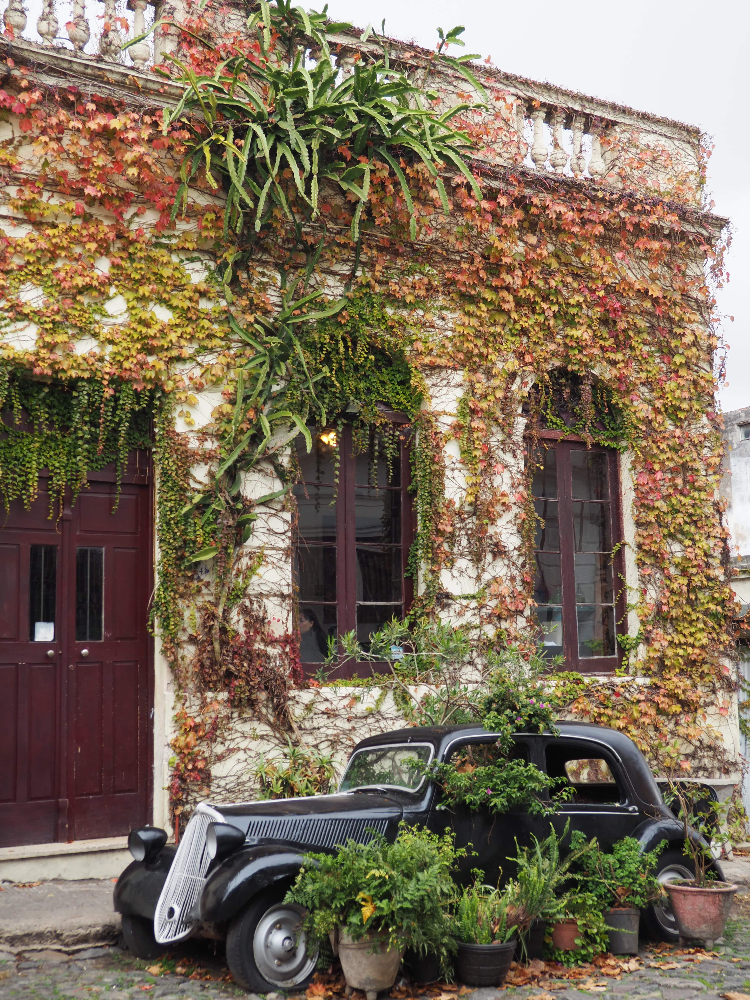
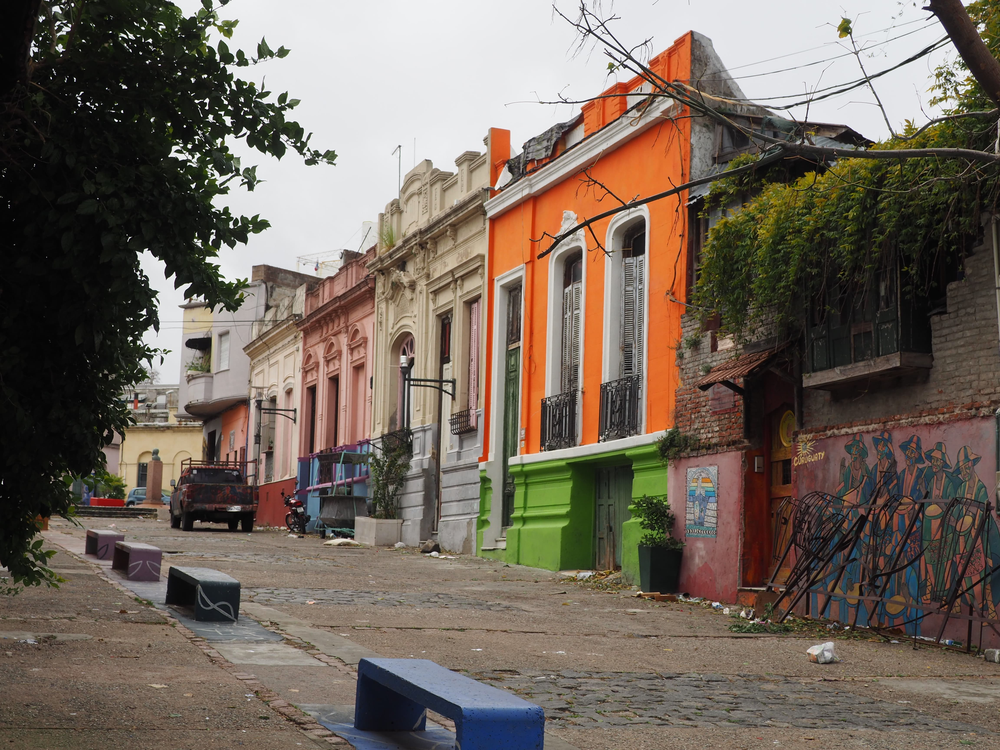

Diaporamas Vous trouverez ici plusieurs diaporamas, classés par région et dates. Utilisez le menu de gauche pour naviguer entre les diaporamas. Cliquez sur les flèches pour faire défiler les photos. Bon visionnage !  